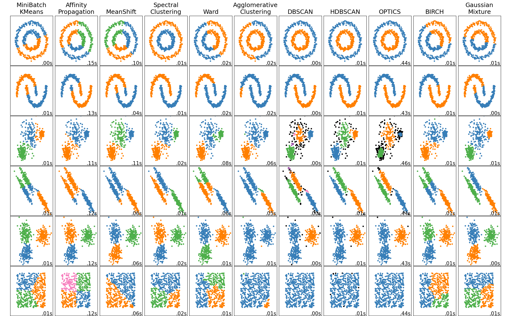

5. Aprendizagem Não Supervisionada
5.1
k-means clustering
Entramos na aprendizagem não supervisionada: agora não há rótulos $y$ para
prever. O objetivo muda de "acertar a resposta" para "encontrar estrutura". O
k-means é o algoritmo mais usado para isso — ele agrupa os dados em $k$
conglomerados (clusters), colocando cada ponto no grupo cujo centro está mais
perto.
Antes de mergulhar no k-means, vale ver o panorama: existem muitos algoritmos
de agrupamento, e cada um enxerga a "estrutura" de um jeito. A figura abaixo, da
documentação do scikit-learn, aplica vários deles a conjuntos de formatos
diferentes (círculos, luas, blobs…). Repare que nenhum acerta tudo — o k-means
(primeira coluna), por supor grupos esféricos, falha nos formatos alongados que
outros métodos capturam. Guarde essa imagem: ela resume por que a escolha do
algoritmo depende da forma dos dados.

Comparação de métodos de agrupamento — exemplo da documentação do scikit-learn (licença BSD).
O que o k-means otimiza
O k-means busca $k$ centros (chamados centroides) que minimizem a soma das
distâncias ao quadrado de cada ponto ao seu centro:
$$
J = \sum_{c=1}^{k} \sum_{\mathbf{x} \in C_c} \lVert \mathbf{x} - \boldsymbol\mu_c \rVert^2
$$
Onde:
- $k$ é o número de grupos (você escolhe);
- $C_c$ é o conjunto de pontos atribuídos ao grupo $c$;
- $\boldsymbol\mu_c$ é o centroide do grupo $c$ (a média dos pontos dele);
- $\lVert \mathbf{x} - \boldsymbol\mu_c \rVert^2$ é a distância ao quadrado do
ponto ao seu centroide;
- $J$ é a inércia (ou WCSS, within-cluster sum of squares) — quanto menor,
mais compactos os grupos.
Como ele encontra os grupos (algoritmo de Lloyd)
Não dá para testar todas as atribuições possíveis, então o k-means alterna dois
passos simples até estabilizar:
- atribuição — cada ponto vai para o centroide mais próximo;
- atualização — cada centroide vira a média dos pontos que recebeu.
Repetindo, a inércia $J$ só diminui, até parar de mudar. Como o resultado depende
de onde os centroides começam, a inicialização inteligente k-means++
(usada por padrão) espalha os centros iniciais para evitar soluções ruins — e
roda-se o algoritmo várias vezes, ficando com a de menor $J$.
O widget abaixo executa o k-means ao vivo: escolha $k$, gere uma nova amostra e
veja os pontos serem coloridos pelo grupo e os centroides se acomodarem. O cartão
mostra a inércia.
Escolhendo k
Como não há rótulo, $k$ é decisão sua. Dois guias:
- método do cotovelo — trace a inércia $J$ contra $k$. Ela sempre cai (mais
grupos ajustam melhor), mas há um "cotovelo" onde a queda desacelera: acrescentar
grupos além dali rende pouco. Esse joelho sugere um bom $k$.
- silhueta — mede, para cada ponto, quão mais perto ele está do próprio grupo
do que do grupo vizinho mais próximo (varia de $-1$ a $1$). A silhueta média alta
indica grupos bem separados.
As limitações (importante)
O k-means supõe grupos esféricos, de tamanho parecido, e usa distância
euclidiana — então é sensível à escala (padronize antes!) e falha quando os
grupos reais têm formas alongadas ou densidades muito diferentes. Saber onde ele
quebra é tão importante quanto saber usá-lo.
No notebook
O notebook 01_kmeans.ipynb aplica o KMeans ao Iris (sem usar os rótulos),
traça a curva do cotovelo e a silhueta para escolher $k$, compara o
agrupamento encontrado com as espécies verdadeiras e mostra um caso em que o
k-means falha (grupos não esféricos), tudo com Plotly.
Exercícios
1. Por que a inércia $J$ nunca aumenta ao passarmos de $k$ para $k+1$
grupos? Isso significa que $k+1$ é sempre melhor?
Ver solução
Com mais centroides, cada ponto pode ficar **igual ou mais perto** de algum centro,
então a soma das distâncias ao quadrado só pode diminuir ou empatar — no extremo
$k = n$, cada ponto vira seu próprio grupo e $J = 0$. Mas isso **não** significa que
mais grupos sejam melhores: um $J$ menor à custa de grupos artificiais não revela
estrutura real. Por isso escolhemos $k$ pelo cotovelo/silhueta, não minimizando $J$.
2. Você aplicou k-means sem padronizar, com "idade" (20–80) e "renda" (milhares).
O que dominou os grupos?
Ver solução
A **renda**, por ter valores muito maiores, dominou a distância euclidiana: os
grupos se formaram quase só por faixa de renda, ignorando a idade. Como no k-NN, o
k-means baseia-se em distância, então **padronizar** (média 0, desvio 1) antes é
essencial para que todas as variáveis pesem de forma comparável.
Referências
- MacQueen, J. (1967). Some Methods for Classification and Analysis of Multivariate Observations. Proc. 5th Berkeley Symposium.
- Lloyd, S. (1982). Least Squares Quantization in PCM. IEEE Transactions on Information Theory, 28(2), 129–137.
- Arthur, D. & Vassilvitskii, S. (2007). k-means++: The Advantages of Careful Seeding. SODA, 1027–1035.
- James, G., Witten, D., Hastie, T., Tibshirani, R. & Taylor, J. (2023). An Introduction to Statistical Learning with Applications in Python, cap. 12. Livro aberto: https://www.statlearning.com/
5.2
Clustering hierárquico
O k-means exige que você diga quantos grupos existem. O clustering hierárquico
não: ele constrói uma árvore de agrupamentos (o dendrograma) que revela
estrutura em todas as escalas de uma vez — de cada ponto isolado até um único grupo
com tudo. Você decide onde cortar essa árvore depois de vê-la.
Como a árvore é construída
A versão mais comum é aglomerativa (de baixo para cima):
- comece com cada ponto sendo seu próprio grupo;
- una os dois grupos mais próximos em um só;
- repita até sobrar um único grupo.
Cada união vira um "galho" do dendrograma, na altura igual à distância entre os
grupos unidos. A pergunta central é: o que significa "distância entre grupos"?
Isso é definido pelo critério de ligação:
- simples (single) — distância entre os dois pontos mais próximos dos
grupos. Tende a formar grupos alongados, em "corrente".
- completa (complete) — distância entre os dois pontos mais distantes.
Favorece grupos compactos.
- média (average) — média das distâncias entre todos os pares.
- Ward — une os grupos que menos aumentam a variância interna total. É o
padrão na prática e costuma dar grupos equilibrados; minimiza, a cada passo,
$$
\Delta = \frac{n_a\, n_b}{n_a + n_b} \, \lVert \boldsymbol\mu_a - \boldsymbol\mu_b \rVert^2
$$
Onde $n_a, n_b$ são os tamanhos dos grupos unidos e $\boldsymbol\mu_a,
\boldsymbol\mu_b$ seus centroides: unir grupos grandes ou distantes custa caro,
então o Ward prefere fusões que mantêm os grupos coesos.
Lendo e cortando o dendrograma
A altura de cada união mede o quão diferentes eram os grupos fundidos: uniões
baixas juntam pontos muito parecidos; uniões altas juntam grupos já distintos.
Para obter $k$ grupos, corta-se o dendrograma numa altura que atravesse $k$
galhos verticais. Uma altura de corte logo abaixo de um "salto" grande costuma ser
uma boa escolha — ali, unir mais custaria juntar grupos genuinamente diferentes.
O widget abaixo mostra um dendrograma com uma linha de corte que você desliza: veja
o número de grupos mudar conforme a altura, e como um corte abaixo de um salto
grande separa a estrutura natural.
Onipresente em bioinformática
O dendrograma é a estrutura por trás dos heatmaps de expressão gênica: genes e
amostras são reordenados por proximidade e as árvores nas bordas mostram quais
agrupam com quais. É a ferramenta visual padrão para explorar dados ômicos.
No notebook
O notebook 02_hierarquico.ipynb aplica clustering aglomerativo ao Iris,
desenha o dendrograma com Plotly (usando a ligação de Ward), compara os critérios
de ligação e mostra como cortar a árvore em $k$ grupos com o
AgglomerativeClustering.
Exercícios
1. Uma vantagem prática do clustering hierárquico sobre o k-means é não precisar
fixar $k$ de antemão. Cite uma desvantagem em conjuntos de dados grandes.
Ver solução
O **custo computacional**: construir o dendrograma aglomerativo exige comparar
todos os pares de grupos a cada passo, com custo de tempo e memória que cresce
tipicamente com $O(n^2)$ ou pior. Para dezenas ou centenas de milhares de pontos
isso fica inviável, enquanto o k-means escala bem melhor. Por isso, em dados
grandes, é comum usar k-means (ou amostrar antes do hierárquico).
2. Com a ligação simples (single), dois grupos claramente separados podem
acabar unidos por causa de poucos pontos entre eles. Por quê?
Ver solução
Porque a ligação simples define a distância entre grupos pelos **dois pontos mais
próximos**. Se houver uma "ponte" de pontos intermediários ligando os dois grupos,
o par mais próximo através da ponte terá distância pequena, e o algoritmo os unirá
cedo — o efeito de **encadeamento** (*chaining*). A ligação completa ou de Ward, que
olham o grupo como um todo, são mais robustas a isso.
Referências
- Ward, J. H. (1963). Hierarchical Grouping to Optimize an Objective Function. Journal of the American Statistical Association, 58(301), 236–244.
- Sokal, R. & Michener, C. (1958). A Statistical Method for Evaluating Systematic Relationships. University of Kansas Science Bulletin.
- Hastie, T., Tibshirani, R. & Friedman, J. (2009). The Elements of Statistical Learning, cap. 14.3.
5.3
Análise de Componentes Principais (PCA)
Dados de alta dimensão — dezenas ou milhares de variáveis — são difíceis de
visualizar e muitas vezes cheios de redundância (variáveis que dizem quase a mesma
coisa). A PCA (análise de componentes principais) resolve os dois problemas de
uma vez: encontra um punhado de novas direções que capturam a maior parte da
informação e projeta os dados nelas.
A ideia: direções de máxima variância
A PCA procura as direções ao longo das quais os dados mais variam — porque é aí
que está a informação. A primeira componente principal é a direção de maior
variância; a segunda é a de maior variância perpendicular à primeira; e assim
por diante.
Formalmente, essas direções são os autovetores da matriz de covariância dos
dados, e a variância capturada por cada uma é o autovalor correspondente:
$$
\mathbf{C}\,\mathbf{v}_j = \lambda_j\,\mathbf{v}_j
$$
Onde:
- $\mathbf{C}$ é a matriz de covariância dos dados (mede como as variáveis
variam juntas);
- $\mathbf{v}_j$ é o $j$-ésimo autovetor — a direção da $j$-ésima componente
principal;
- $\lambda_j$ é o $j$-ésimo autovalor — a variância dos dados ao longo dessa
direção.
Ordenando os autovalores do maior para o menor, ficamos com as direções que mais
importam e descartamos as de variância desprezível.
Quanta informação cada componente guarda
A variância explicada pela componente $j$ é sua fração do total:
$$
\text{variância explicada}_j = \frac{\lambda_j}{\sum_{i} \lambda_i}
$$
Somando as maiores, obtemos a variância explicada acumulada. Uma regra comum:
manter componentes suficientes para reter, digamos, 90% ou 95% da variância — assim
comprimimos os dados perdendo pouco.
O widget abaixo mostra a intuição: uma nuvem de pontos correlacionados e uma direção
de projeção que você gira. Encontre o ângulo que maximiza a variância dos pontos
projetados — essa é, por definição, a primeira componente principal. O cartão mostra
quanto da variância total aquela direção captura.
Padronizar quase sempre
A PCA persegue variância, e variância depende de unidades. Uma variável em
milhares (renda) teria variância muito maior que uma proporção (0 a 1), e a PCA a
escolheria como primeira componente só pela escala. Por isso, salvo quando todas as
variáveis já estão na mesma unidade, padroniza-se antes (média 0, desvio 1) —
aí a PCA opera sobre a matriz de correlação, não de covariância.
No notebook
O notebook 03_pca.ipynb aplica a PCA (com padronização) ao Iris e ao conjunto
breast cancer, traça o scree plot e a variância explicada acumulada, projeta
os dados em 2D com Plotly — vendo as espécies/classes se separarem sem nunca terem
sido usadas — e interpreta as cargas (o peso de cada variável em cada componente).
Exercícios
1. As duas primeiras componentes de um conjunto explicam 62% e 21% da variância.
Quanto se perde ao visualizar os dados apenas no plano dessas duas componentes?
Ver solução
As duas juntas retêm $62\% + 21\% = 83\%$ da variância total, então a projeção 2D
**perde 17%** da variância (a informação nas demais componentes). Costuma ser um
ótimo negócio para visualização: enxergamos a estrutura dominante num plano, cientes
de que uma fração menor da variação fica de fora.
2. Por que a PCA sem padronizar pode ser enganada por uma única variável de
escala grande?
Ver solução
Porque a PCA maximiza **variância**, e a variância é medida nas unidades de cada
variável. Uma variável em unidades grandes (ex.: renda em reais) tem variância
numérica enorme comparada a uma proporção, então a primeira componente aponta quase
que só na direção dela — não porque seja a mais informativa, mas porque tem a maior
escala. Padronizar coloca todas na mesma régua e evita esse artefato.
Referências
- Pearson, K. (1901). On Lines and Planes of Closest Fit to Systems of Points in Space. Philosophical Magazine, 2(11), 559–572 — a origem da PCA.
- Hotelling, H. (1933). Analysis of a Complex of Statistical Variables into Principal Components. Journal of Educational Psychology, 24, 417–441.
- James, G., Witten, D., Hastie, T., Tibshirani, R. & Taylor, J. (2023). An Introduction to Statistical Learning with Applications in Python, cap. 12. Livro aberto: https://www.statlearning.com/
5.4
t-SNE e UMAP
A PCA é linear: ela projeta os dados em um plano. Mas muita estrutura biológica
é curva, enovelada — e uma projeção linear a achata. O t-SNE e o UMAP são
técnicas não lineares feitas para um objetivo específico: visualizar dados
de altíssima dimensão em 2D, preservando quem está perto de quem.
A ideia: preservar a vizinhança local
Ambos partem do mesmo princípio: se dois pontos são vizinhos no espaço original
(de milhares de dimensões), eles devem continuar vizinhos no mapa 2D. Em vez de
tentar preservar todas as distâncias (impossível ao espremer mil dimensões em duas),
eles preservam a estrutura local.
- O t-SNE converte distâncias em probabilidades de vizinhança e procura um
arranjo 2D cujas probabilidades sejam as mais parecidas possíveis com as
originais. Seu hiperparâmetro-chave é a perplexidade — grosso modo, quantos
vizinhos cada ponto "considera" (valores típicos: 5 a 50).
- O UMAP parte de fundamentos geométricos diferentes, costuma ser mais rápido
e preservar um pouco melhor a estrutura mais global. Seu parâmetro análogo é o
n_neighbors.
Nos dois, o número de vizinhos regula o equilíbrio entre enxergar detalhe local
(poucos vizinhos) e estrutura ampla (muitos vizinhos).
As armadilhas de interpretação (leia com atenção)
Esses mapas são lindos e reveladores, mas fáceis de superinterpretar. Três regras:
- O tamanho dos grupos não significa nada. t-SNE e UMAP expandem grupos densos e
encolhem os esparsos; a área de um aglomerado no mapa não reflete sua dispersão
real.
- As distâncias entre grupos enganam. A técnica preserva vizinhança local,
não distâncias globais. Dois grupos afastados no mapa não são necessariamente mais
diferentes que dois grupos próximos.
- O resultado muda entre execuções e com os hiperparâmetros. Vale rodar com
algumas perplexidades/sementes e confiar no que é estável, não em um mapa
único.
Em resumo: use t-SNE e UMAP para gerar hipóteses sobre agrupamentos, não para
medir distâncias ou tamanhos. A quantificação fica para outros métodos.
No notebook
O notebook 04_tsne_umap.ipynb usa o conjunto de dígitos manuscritos (64
dimensões) para comparar, lado a lado com Plotly, a projeção linear da PCA com a
do t-SNE — vendo os dígitos se separarem em ilhas que a PCA mistura. O UMAP entra
como célula opcional (se a biblioteca estiver instalada), e variamos a
perplexidade para mostrar sua influência.
Exercícios
1. Em um mapa t-SNE de células, um grupo aparece com o dobro da área de
outro. Um colega conclui que esse tipo celular é "mais variável". Ele está certo?
Ver solução
**Não.** O tamanho de um grupo em t-SNE (e UMAP) **não** corresponde à sua dispersão
real: a técnica expande regiões densas e comprime as esparsas para caber no plano. A
área no mapa é um artefato do método, não uma medida de variabilidade. Para comparar
dispersão, é preciso quantificar no espaço original (por exemplo, a variância dentro
de cada grupo).
2. Por que a PCA, mesmo sendo mais simples, ainda é útil antes de aplicar
t-SNE ou UMAP em dados com milhares de dimensões?
Ver solução
Rodar t-SNE/UMAP diretamente em milhares de dimensões é lento e sensível a ruído. É
prática comum reduzir primeiro com **PCA** (digamos, para 30–50 componentes),
removendo ruído e acelerando muito o cálculo, e só então aplicar t-SNE/UMAP sobre
essa representação já comprimida. A PCA faz o trabalho pesado de compressão linear; o
t-SNE/UMAP cuida do arranjo local final.
Referências
- van der Maaten, L. & Hinton, G. (2008). Visualizing Data using t-SNE. Journal of Machine Learning Research, 9, 2579–2605.
- McInnes, L., Healy, J. & Melville, J. (2018). UMAP: Uniform Manifold Approximation and Projection for Dimension Reduction. arXiv:1802.03426.
- Wattenberg, M., Viégas, F. & Johnson, I. (2016). How to Use t-SNE Effectively. Distill — sobre as armadilhas de interpretação.